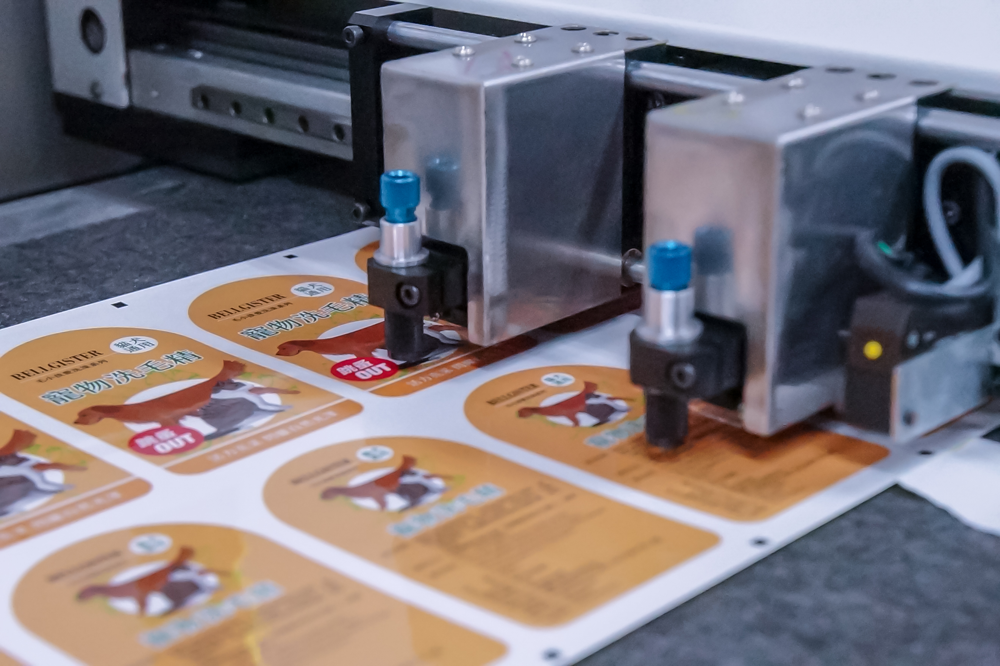

彩鑫(亞泰印刷)
本公司致力於標籤印刷及各類印刷品，多年來累積各類印刷經驗，主打商
標印刷、自動包裝專用捲材印刷、標籤印刷、貼紙印刷、瓶身標籤印刷等各方
面更是建立了好口碑，用心傾聽每位客戶的寶貴意見，提高效率為改進的方
向，更是提升與同業印製商標印刷、標籤印刷、貼紙印刷方面的競爭力，如此
豐富經歷在業界握有良好的信譽，同時獲得廣大客戶的肯定與信賴。
從接單到交貨，所有流程都全力以赴，力求最快最佳的產品服務，且因工 廠直營印刷服務一貫作業，在估價方面都會有令人滿意的回覆。秉著三大原 則:「專業」、「優質」、「快速」，給予客戶頂尖的服務;未來「彩鑫興業有限公 司」除原有標籤印刷、自動包裝專用捲材印刷、商標印刷、貼紙印刷、瓶身標 籤印刷、檢驗標籤印刷，將會提供更多項印刷項目，成為一家印刷百貨，最優 質的印前版、印刷及加工、高CP值印鑑價格、最快的交建物流，努力打造成 一羅卓越企業。


彩鑫(亞泰)印刷服務
-「品質是經營的根本，效率是競爭的利器」-
(一)全方位專業服務，體貼客戶需求
從接到客戶訂單開始，依照客戶需求，做專業詳細的詢問與了解，
並提供相關的印刷知識，解惑客戶的提問，體貼的客製化，達到全
方位的專業服務。
(二)印前印號加工一貫化服務，滿足客戶需求
工廠直營建立一貫化的生產線，從接搞→審稿→製版→印刷→加工
(各類上光材質/裝訂/壓線/流水號/導園角/燙金銀/打孔/
打凸/軋工)→迅速交貨，以最大的效率將印刷品優質化，提供精
緻的印刷品質。
(三)高效率服務，品質控管優質化
廠區有採電腦統一色彩管理，透過保持統一的色彩重現條件，降低
操作錯誤，科技化的色彩管理，改善由人工控墨不穩定的狀況，加
上專業人員具備色彩管理經驗，實現精確;產能高又穩定的印件品
質。